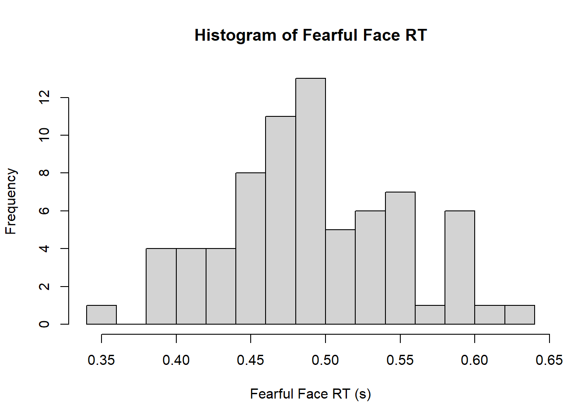
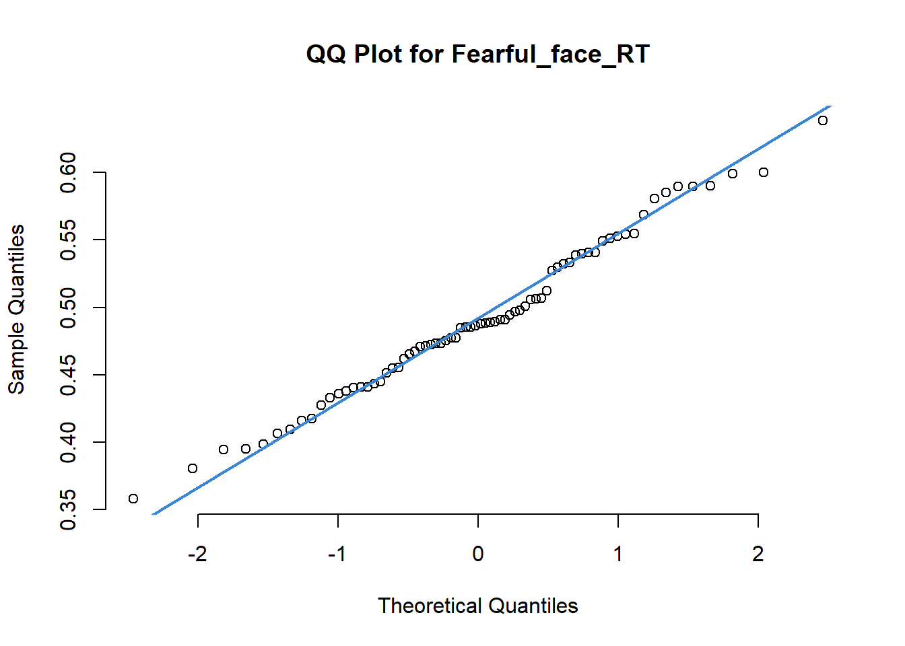
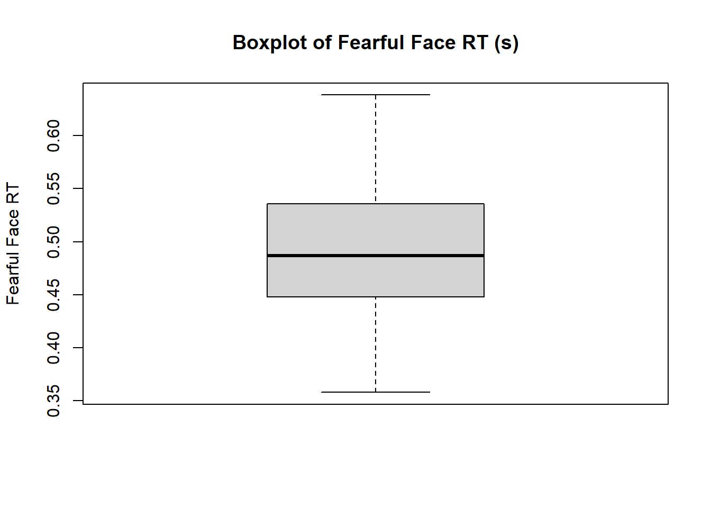
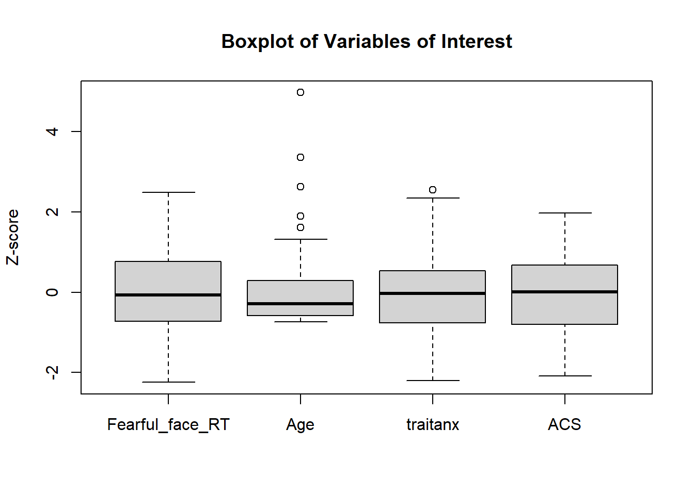
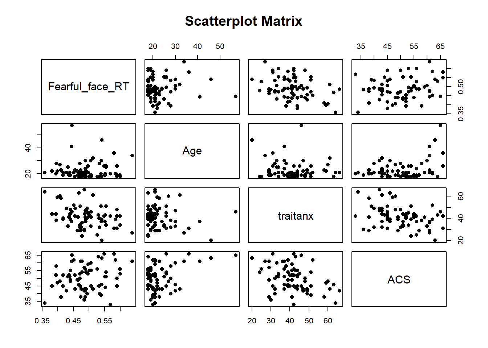
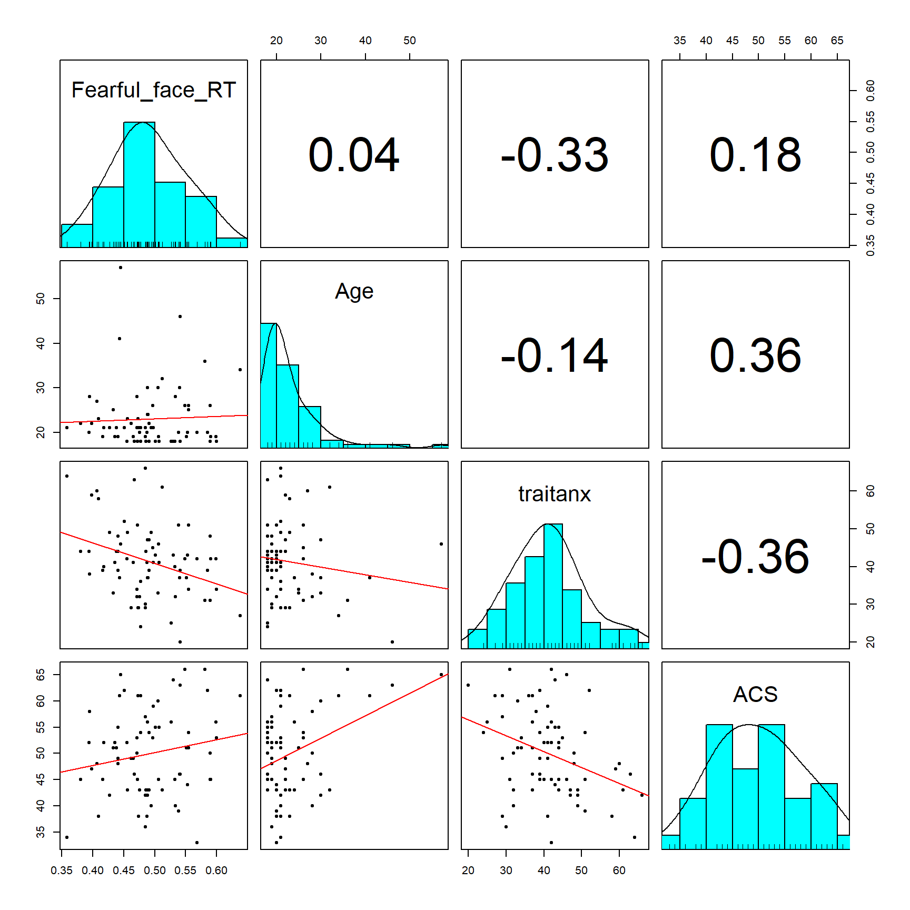
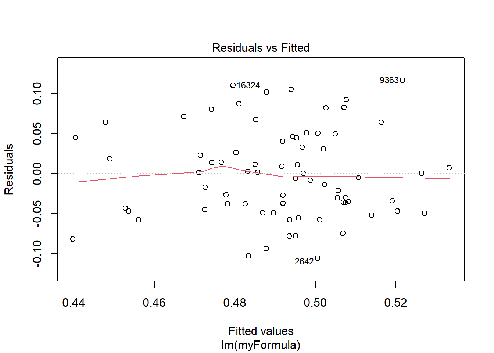
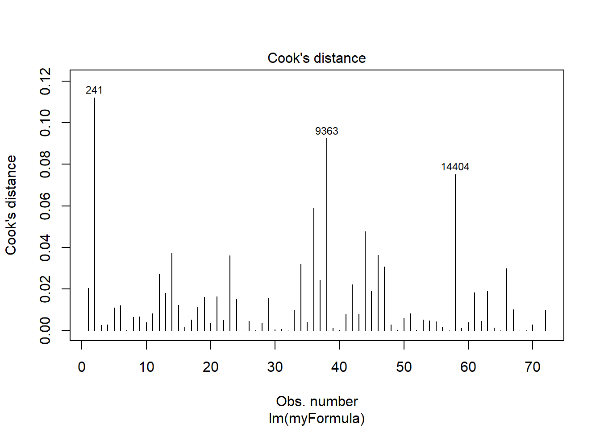

df <- read.csv("fearful_faces_data.csv")PS71020_Unit4_Lab
Regression 1
Learning Outcomes:
1 - Use RStudio to carry out simple linear regressions (forced-entry)
2 - Understand the relationship between regression parameter estimates and various types of correlation coefficients
3 - Use RStudio to check data for assumptions of linear regression.
4 - Use RStudio to calculate semipartial correlations
Materials Used:
We will use the packages effectsize, rstatix, car, psych, ppcor these are already installed on the RStudio Server but if you are working on your own Laptop you may need to install them.
NoteSome general notes about the weekly labs
You should go through the worksheet during the lab and try to complete as much of it during the lab as you can. You can work on the sheet individually or in small groups during the lab. Try to answer the lab worksheet questions in your own words however. If you are unable to finish the worksheet during the class, try to finish it outside class time. Try to attempt the answer before using the ‘Show Answer’ button.
As you go through the sheet, copy the relevant lines of code to your own analysis script.
A complete model answers script will be available on the VLE page from Fridays after the labs so you can check your own answers.
If you have any queries during the class, please feel free to ask your lab tutors. If your question relates specifically to the lecture content or the homework sheets, please contact Peter Holland by email or use the forum on the VLE page.*
CREATE A NEW PROJECT
Just as we did in previous weeks we are going to start by creating a new project for this week’s lab. Download the data from the VLE (In the Week 4 Lab Materials section) and then copy it in the folder you created your project in. You can also find a direct download link for the data here: Github Link.
If you are working on the RStudio Server, then you will need to download the file to your computer and then upload it to the correct folder on the server.
Also create a new script in this folder so you can copy the lines of code needed to run this analysis yourself using just that script.
SECTION A. THE DATA SET
The face RT dataset was collected as a test of the role of trait anxiety in healthy participants (measured by the Spielberger Trait Anxiety Scale; variable name in dataset = traitanx) on the ability to identify the emotional expression on faces. The stimuli were taken from a standard library of head shots of people posing a variety of emotional expressions (happy, sad, angry, fearful etc). The particular focus was on the speed (reaction time; RT) to correctly identify faces with happy or fearful expressions. Fearful expressions are considered to signal the presence of threat. Anxiety is argued to reflect, amongst other things, a disorder of threat processing (in some way). Therefore, the research question was whether anxiety would be related to the RT taken to process fearful faces.
The dependent variable (DV) of primary interest was the participants’ average RT (for correct responses) when shown fearful faces. In the task, they were shown either happy or fearful faces on each trial, and asked to press response keys to indicate, as quickly as possible while maintaining a high level of accuracy, whether the expression was fearful or happy.
The researchers wondered whether any effect of anxiety on fearful faces might reflect a more general disturbance of attentional control in the presence of attention-grabbing stimuli (such as fearful faces). They therefore included a standard self-report questionnaire called the Attentional Control Scale (higher scores indicate better attentional control; variable name in dataset = ACS). The prediction here was that higher ACS scores would be present in people with higher trait anxiety, but it was unclear whether attentional control (as measured by the ACS) would make a contribution to the prediction of fearful faces RT, over and above any effect related to trait anxiety. For the final predictor, the researchers wanted to include age as a variable in the regression as this might impact on RT more generally.
If you view this data in the variable viewer (either click on the small table icon in next to the name df in the Environment panel or use the code View(df)) set you can see that there are many rows with missing data (NA). This is because the data set originally contained data for every trial but the mean reaction times for each participant have now been calculated and placed only in the row corresponding to the first trial.
The first thing we will do is to create a smaller data set with only the variables of interest and excluding these extra rows of data.
In Lab 2. Section B we saw how to use the subset() function to select only certain rows of a data set. We can use this function to simultaneously select only certain rows and certain variables.
vars = c("Fearful_face_RT","Age","traitanx","ACS")
dfTrim <- subset(df, subset = df$trialnum==1, select = vars)Check the summary() of our new data set. Do you notice anything problematic? What line of code could we use to fix this issue?
We appear to have some missing data with NAs present in the traitanx and ACS variables.
In the Week 2 Homework Homework 2. Section B, we used a function called complete.cases() along with subset() to select only complete rows of data.
dfClean <- subset(dfTrim,complete.cases(dfTrim))SECTION B. ASSUMPTION CHECKS
We should now inspect our variables of interest.
Create a histogram of our DV to assess normality.
hist(dfClean$Fearful_face_RT, breaks = 20, main = "Histogram of Fearful Face RT", xlab = "Fearful Face RT (s)")
Another way we can visually assess normality is through a qqplot, here is the code to do this for the DV:
qqnorm(dfClean$Fearful_face_RT, pch = 1, frame = FALSE, main = "QQ Plot for Fearful_face_RT")
qqline(dfClean$Fearful_face_RT, col = "#3a86d4", lwd = 2)
Is there any evidence to suggest that the DV is distributed in a fashion which markedly deviates from a normal distribution?
None at all; the histogram looks pretty normal and the Q-Q plot shows little deviation above the theoretical line.
We can also check normality statistically using a Shapiro-Wilk test and checking the skewness and kurtosis values. See: Lab 2. Section C
What are the lines of code needed to do this?
shapiro.test(dfClean$Fearful_face_RT) # for only the DV
Shapiro-Wilk normality test
data: dfClean$Fearful_face_RT
W = 0.98698, p-value = 0.667If we want to test all variables we can use sapply(). See Tutorial 5
sapply(dfClean, shapiro.test) Fearful_face_RT Age
statistic 0.9869751 0.6969229
p.value 0.6669526 6.669607e-11
method "Shapiro-Wilk normality test" "Shapiro-Wilk normality test"
data.name "X[[i]]" "X[[i]]"
traitanx ACS
statistic 0.9733591 0.9796048
p.value 0.1298502 0.2928007
method "Shapiro-Wilk normality test" "Shapiro-Wilk normality test"
data.name "X[[i]]" "X[[i]]" The describe() function in the psych package is the easiest way to get skewness and kurtosis values and can do this for all variables in our data set:
library(psych)
describe(dfClean$Fearful_face_RT) vars n mean sd median trimmed mad min max range skew kurtosis se
X1 1 72 0.49 0.06 0.49 0.49 0.07 0.36 0.64 0.28 0.18 -0.45 0.01Do any of these variables appear to deviate from normality? Is this necessarily a problem for a regression analysis?
Only the Age variable, which shows a significant Shapiro-Wilk and high skewness and kurtosis. All others have non-significant (p>0.05), Shapiro-Wilk tests and skewness and kurtosis values look fine for them.
Not necessarily a problem for the regression as the assumption is on the normality of the residuals. Even the DV can be non-normal if that non-normality is explained by the predictors.
However, we should still check for outliers in the DV and predictors, we can do this one at a time using something like this:
boxplot(dfClean$Fearful_face_RT, main = "Boxplot of Fearful Face RT (s)", ylab = "Fearful Face RT")
However, it makes more sense to examine all variables at the same time:
boxplot(scale(dfClean), main = "Boxplot of Variables of Interest", ylab = "Z-score")
What is the purpose of using the scale() function when creating the boxplots?
It converts all variables to z-scores, otherwise it would be hard to see all variables on the same plot because of measurement different scales.
Check the summary statistics for the Age variable, do you think these outliers are genuine outliers or should be kept?
summary(dfClean$Age) Min. 1st Qu. Median Mean 3rd Qu. Max.
18.00 19.00 21.00 23.01 25.00 57.00 The maximum Age here is 57 which appears perfectly plausible, in general given the mean, median and quartile values it would appear that this sample is probably from an undergraduate sample. Unless, our hypothesis was specifically targeting this age range then keeping the older participants is the best course.
We should check correlations and scatter plots to assess the assumptions of linearity and homoscedasticity. The rstatix package has a set of useful function for calculating correlation matrices and making readable output tables.
cor_mat() - calculates pearson R values for the pairs of a group of variables
cor_get_pval() - calculates the p-values associated with the output of cor_mat()
cor_gather() - can be used to group these into a readable table
pull_lower_triangle() - extracts only the lower triangle (parts to the bottom left of the diagonal) of a correlation matrix.
library(rstatix)
Attaching package: 'rstatix'The following object is masked from 'package:stats':
filtercor_mat(dfClean)# A tibble: 4 × 5
rowname Fearful_face_RT Age traitanx ACS
* <chr> <dbl> <dbl> <dbl> <dbl>
1 Fearful_face_RT 1 0.045 -0.33 0.18
2 Age 0.045 1 -0.14 0.36
3 traitanx -0.33 -0.14 1 -0.36
4 ACS 0.18 0.36 -0.36 1 Why would it be useful to use a function like pull_lower_triangle() to only get part of the correlation matrix?
Because the diagonal contains only 1s as these are the correlations of a variable with itself. The upper triangle is just a reflected version of the lower triangle and therefore redundant.
We can chain some of these commands together like this to produce a more easily readable output table:
cor_gather(pull_lower_triangle(cor_mat(dfClean))) var1 var2 cor p
1 Age Fearful_face_RT 0.045 0.707432914
2 traitanx Fearful_face_RT -0.330 0.004334053
3 ACS Fearful_face_RT 0.180 0.136298753
4 traitanx Age -0.140 0.229512925
5 ACS Age 0.360 0.001913303
6 ACS traitanx -0.360 0.001903419Which correlation are significant at the .05 level?
traitanx and Fearful_face_RT, have a negative correlation. ACS and Age, have a positive correlation. ACS and traitanx, have a negative correlation.
We can produce a correlation matrix plot using the pairs() function in base R:
pairs(dfClean,
main = "Scatterplot Matrix", pch = 16)
However, the psych package has a very useful function called pairs.panels() that allows us to include a lot of other useful information such as histograms and correlation values:

pairs.panels(dfClean, lm = TRUE, ellipses = FALSE)Concentrating on the DV, how do the scatterplots with the other variables look. Do the relationships look markedly heteroscedastic or non-linear?
• If one looks at Age it is easy to see the skew in age which makes it hard to see a linear relationship and hard to judge any heteroscedasticity as the age values are bunched up in a very narrow range with very few values for the older ages.
• If one looks at ACS, the relationships looks a bit like an O; there is an absence of data points in the centre of the diagram where they would normally be the highest density of dots (for a bivariate normal relationship). So, this possibly creates some heteroscedasticity with more variance at the extremes of the ACS scores relative to the centre.
• If one looks at trait anxiety the relationship looks reasonably linear and homoscedastic (especially if you remove the two most anxious subjects who might well have been outliers and are scoring in the clinical range).
SECTION C. REGRESSION
We can carry out regressions in R using the lm() function, which fits linear models to our data. This function is normally used with the the same lm(formula, data) syntax as we used with the aov() function for calculating ANOVAs. See Lab 3. Section D.
What is the formula for estimating the effects of Age, traitanx, and ACS on Fearful_face_RT. We are only interested in their main effects not the interactions?
myFormula <- Fearful_face_RT ~ Age + traitanx + ACSWe can then use this formula with the lm() function and just as we did with our ANOVA output from the aov function we assign this to a variable and use the summary() function to get an easier to read output:
mdl <- lm(myFormula,dfClean)
summary(mdl)
Call:
lm(formula = myFormula, data = dfClean)
Residuals:
Min 1Q Median 3Q Max
-0.105742 -0.043660 -0.002261 0.044587 0.116670
Coefficients:
Estimate Std. Error t value Pr(>|t|)
(Intercept) 0.5470081 0.0637205 8.584 1.9e-12 ***
Age -0.0002299 0.0010605 -0.217 0.8290
traitanx -0.0018929 0.0007492 -2.527 0.0138 *
ACS 0.0005506 0.0009446 0.583 0.5619
---
Signif. codes: 0 '***' 0.001 '**' 0.01 '*' 0.05 '.' 0.1 ' ' 1
Residual standard error: 0.05698 on 68 degrees of freedom
Multiple R-squared: 0.1149, Adjusted R-squared: 0.07587
F-statistic: 2.943 on 3 and 68 DF, p-value: 0.0391What is the model R2? What does this value tell us?
R2 = 0.115 It gives the proportion of variance in the DV that is explained by the model, i.e. by the three IVs taken together. (So the model explains 11.5% of the DV variance in this case.)
What does the adjusted R2 tell us and how does its value relate to R2?
Adjusted R2 = 0.076 Adjusted R2 corrects for likely overestimation of R2. The adjustment is based on the sample size and the number of IVs.
(See Tabachnick and Fidell for more details)
What does the F-test on the overall model tell us?
It tells us whether R is significantly different from zero; or equivalently, whether a significant amount of variance (R2) in the DV is accounted for by the predictors; or, more simply, whether the regression model is a significant predictor of the DV.
Here, F(3,68) = 2.94, p = .04 So R is significantly different from zero; the regression model is able to predict the DV better than a model with just the intercept (i.e. with no IVs). The intercept only model just assigns the mean value of the DV to each subject. The F test shows that the current model is a significantly better predictor than that.
What do the unstandardised regression coefficient estimates (in the “Coefficients” output table) mean?
The unstandardized coefficients are the coefficients in the regression equation.
If you remember, the regression equation is of the general form:
Ŷ (the predicted value of the DV) = b0 + b1x1 + b2x2 + b3x3 (and so on depending on the number of predictors) In this case, the predicted value of the DV is Fearful_face_RT = 0.547 –0.0002xAge + 0.0006xACS - 0.0019xtraitanx The unstandardised coefficients for an IV therefore represent the amount that Fearful_face_RT would increase for one unit increase in that IV. [And you can also see from the equation that they represent the independent contribution of that IV. In other words, they are the amount that Fearful_face_RT would increase if that variable increased by 1 unit and the other IVs were held constant.]
As well as the unstandarised regression coefficients it is important to also report the standardised regression coefficients. The lm() function in base R does not provide these for us, however, we can get these in a few different ways.
1 - we can use the standardize_parameters() function from the psych package:
library(effectsize)
Attaching package: 'effectsize'The following objects are masked from 'package:rstatix':
cohens_d, eta_squared, omega_squaredThe following object is masked from 'package:psych':
phistandardize_parameters(mdl)# Standardization method: refit
Parameter | Std. Coef. | 95% CI
-----------------------------------------
(Intercept) | -4.39e-16 | [-0.23, 0.23]
Age | -0.03 | [-0.27, 0.22]
traitanx | -0.31 | [-0.55, -0.06]
ACS | 0.08 | [-0.18, 0.33]2 - We can standardise (z-score) our data before fitting the regression model:
mdl2 <- lm(myFormula, as.data.frame(scale(dfClean)))
summary(mdl2)
Call:
lm(formula = myFormula, data = as.data.frame(scale(dfClean)))
Residuals:
Min 1Q Median 3Q Max
-1.78385 -0.73654 -0.03815 0.75217 1.96820
Coefficients:
Estimate Std. Error t value Pr(>|t|)
(Intercept) -4.423e-16 1.133e-01 0.000 1.0000
Age -2.651e-02 1.223e-01 -0.217 0.8290
traitanx -3.090e-01 1.223e-01 -2.527 0.0138 *
ACS 7.561e-02 1.297e-01 0.583 0.5619
---
Signif. codes: 0 '***' 0.001 '**' 0.01 '*' 0.05 '.' 0.1 ' ' 1
Residual standard error: 0.9613 on 68 degrees of freedom
Multiple R-squared: 0.1149, Adjusted R-squared: 0.07587
F-statistic: 2.943 on 3 and 68 DF, p-value: 0.0391What do the standardised coefficients represent?
Standardised coefficients represent the number of Standard Deviations (SDs) that the DV would increase for one SD increase in that IV, again presuming that all other IVs are held constant.
This is why z-scoring all of our variables first creates the same values.
So if the traitanx IV increased by 1 SD (other IVs unchanged), the DV would decrease by about .31 (about 31%) of a SD in the DV.
Looking at the original output from summary(mdl) How are the t-statistics derived from other values in the table?
Unstandardised Coefficient estimate / SE of that estimate.
So, for traitanx Estimate = -0.0019 s.e. of the estimate = 0.00075 Thus t = -0.0019/0.00075 = -2.53
Warning
If you look further up when we loaded the psych package, R produced a message that said something like:
The following objects are masked from ‘package:rstatix’:
cohens_d, eta_squared, omega_squaredThis is because we had previously loaded the package rstatix and both of these packages contain functions called the same names. When this happens R will use the version contained in the package that was loaded with the library() function most recently and it masks the functions from the older package. Apart from the visual warning above R does not produce any other errors to let you know and if you do not pay attention then this can cause unexpected behaviour in your scripts.
To use the function from a specific package we use the package::function syntax. So to use the rstatix version of cohens_d we would use the code rstatix::cohens_d().
Now that we have built our regression model we can check the important assumptions of normality and homoscedasticity of the residuals. We can do this by creating a plot of Residuals vs. the predicted (fitted) values. We could do this ourselves by accessing some of the properties of the mdl object, like this plot(mdl$fitted.values,mdl$residuals). However, R’s plot() function can make a nicer plot for us:
plot(mdl, which = 1)
That gives you residuals vs fitted values with a smoothed red trend line. You want that line roughly flat and the points evenly scattered, with no funnel shape (unequal spread) or curve (non-linearity).
The above plot shows no clear evidence of non-linearity, skew or heteroscedasticity.
We can also directly test the normality of the residuals of the model:
shapiro.test(mdl$residuals)
Shapiro-Wilk normality test
data: mdl$residuals
W = 0.9723, p-value = 0.1128This results confirms what we saw in the plot and that the residuals are normally distributed.
Although we checked for univariate outliers in the individual variables at the screening stage we did not check for multivariate outliers (to save time in the lab, you should perform this check in real analysis or coursework).
We can perform a related check using the cooks.distance() function:
cd <- cooks.distance(mdl)What are the values of Cook’s D for this data set? What does Cook’s D test?
mean(cd)[1] 0.0141743max(cd)[1] 0.11216Cook’s D test the influence of each data point when carrying out a regression, high values suggest that single data point(s) are having an overly high influence on the model.
The mean value is 0.014, with a maximum value of 0.112. A rule of thumb is that Cook’s value should not exceed 1 for any case. Thus, there are no overly influential cases in this regression dataset.
The plot() function is also able to produce another diagnostic plot for us of these values:
plot(mdl, which = 4)
Another important assumption check for our regression model is multicollinearity. This can be performed using the vif() function of the car package:
library(car)Loading required package: carData
Attaching package: 'car'The following object is masked from 'package:psych':
logitvif_vals <- vif(mdl)
vif_vals Age traitanx ACS
1.148912 1.149069 1.292705 What are the values of the tolerance and variance inflation factor (VIF) for the predictors in this model? Explain how the collinearity statistics (Tolerance and VIF) are derived and what they tell us for the analysis?
Although the function only produces the VIF we can easily calculate the tolerance values as: VIF = 1 / Tolerance.
tol_vals <- 1/vif_vals
tol_vals Age traitanx ACS
0.8703886 0.8702695 0.7735716 Tolerance is derived from the Squared Multiple Correlation of all other IVs predicting the IV in question (the amount of variance of that IV explained by all other IVs).
Tolerance = 1- SMC. Collinearity is indicated if SMC is high, i.e. tolerance is low.
From the lecture notes, collinearity is considered a problem if tolerance is less than 0.25; or equivalently, VIF is above 4. So, our values are not problematic.
(Other guidelines exist, e.g. Field cites Menard, 1995, as saying it is a tolerance below 0.2 that indicates a potential problem. Obviously, our tolerance is well above this guideline too. Older texts use 10 and 0.1 as rules of thumb; these older values are too lax.)
What do the results of the regression tell the researchers about the theory?
The results show that trait anxiety is negatively associated with fearful faces RT and in the regression there is no additional contribution from the ACS measure or from Age. Higher anxious subjects respond more rapidly (cf low anxious subjects) to fearful faces. However, essentially, we got the same results for Happy face RT (these data are available on the VLE). So, it doesn’t seem to be anything specific to the threatening properties of the fearful faces which is affected by anxiety. Perhaps high anxious subjects are sped up by emotional stimuli whether negative or positive.
Please see the homework for how to do a full write up of a regression and report the important statistics.
SECTION D. SEMI-PARTIAL CORRELATIONS
We can use semi-partial correlations to decompose the variance in the DV explained by each predictor. The squared semi-partial correlation value is the proportion of the total variance in the outcome uniquely explained by that predictor.
myFormula <- Fearful_face_RT ~ Age + traitanx + ACS
The simplest way to do this in R is to use the package ppcor with the function spcor() for semi-partial correlations. This returns a correlation matrix but we can directly ask for only the row that relates to predictor relationships with the DV:
library(ppcor)Loading required package: MASS
Attaching package: 'MASS'The following object is masked from 'package:rstatix':
select#get semi-partial correlations of predictors to the DV
spcor(dfClean)$estimate["Fearful_face_RT", ]Fearful_face_RT Age traitanx ACS
1.00000000 -0.02473082 -0.28825448 0.06650198 #get the squared semi-partial correlations of predictors to the DV
spcor(dfClean)$estimate["Fearful_face_RT", ]^2Fearful_face_RT Age traitanx ACS
1.0000000000 0.0006116135 0.0830906479 0.0044225137 We can also directly check the meaning of a squared semi-partial correlation, which is the reduction in R2 when a predictor is removed from the model (that contains the other predictors). We can see here that the values match those found in the third column relating to the effect of the variable traitanx.
#the full model with 3 predictors
full <- lm(Fearful_face_RT ~ Age + traitanx + ACS, data = dfClean)
#the reduced model with only the two other predictors
reduced <- lm(Fearful_face_RT ~ Age + ACS, data = dfClean)
sr2 <- summary(full)$r.squared - summary(reduced)$r.squared
sqrt(sr2) #semi-partial correlation[1] 0.2882545sr2 # squared semi-partial correlation unique variance explained by sleep_hours[1] 0.08309065What percentage of the variance of Fearful_face_RT is uniquely accounted for by traitanx, after controlling for Age and ACS?
~29%